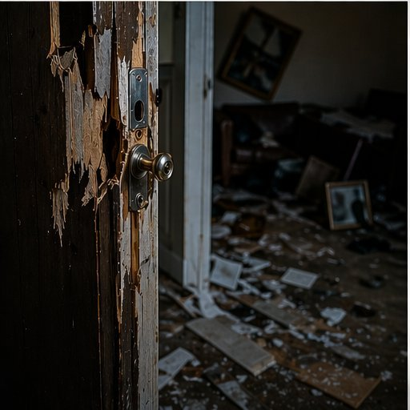

The Cost of a Fake Call.
Swatting is often called a prank. At best it is terror and wasted public money. At worst it is death.

§ 01 Impact on Victims and Families
Shapiro (2023b) describes what a swatting attack looks like: SWAT officers scream commands — "hands up," "get down on the floor." The lasting effect on the victim and the family can be permanent.
Physical Harm and Death
- Victims, family members, neighbors, and police can all be injured or killed.
- At least two deaths have been directly linked to swatting.
- Tyrone Dobbs was shot with rubber bullets, needed facial surgery, and later developed PTSD.
- In one case, police thought a victim's cellphone was a gun and almost shot him.
Emotional and Psychological Trauma
- Victims have trouble sleeping, have thoughts of suicide, and develop PTSD.
- The 2022 HBCU bomb threat wave caused PTSD, damaged wellbeing, and school problems for students, teachers, and staff.
Money Problems for Families
- Victims lose income and pay legal fees defending themselves after the chaos of the raid.
- Twitch streamers can lose thousands of dollars per month when attacks scare viewers away.
- Families carry the trauma too — children, spouses, and roommates go through the raid right alongside the target.
§ 02 Impact on Society
Shapiro (2023b) lists three big problems swatting causes for society: it pulls police away from real emergencies, it wastes public money, and it makes people distrust police.
Direct Financial Cost
Who Responds — and Who Isn't Available for Real Emergencies
A SWAT response pulls in many more people than just the SWAT team (Shapiro, 2023b):
- SWAT officers for the fake emergency.
- Patrol officers to direct traffic and close roads.
- Bomb squad with dogs to search for explosives.
- Detectives, firefighters, paramedics, EMTs, and police chiefs.
All of them are busy during the attack and cannot respond to real emergencies.
Risk to Public Safety
Shapiro (2023b; 2023d) describes additional risks:
- When police respond to a fake call, they may be delayed getting to a real crime, heart attack, or accident nearby.
- Hidden costs: equipment repair, investigation, overtime, property replacement, medical bills, and lost sales at closed businesses.
Shutdowns and Lost Trust
Shapiro (2023b; 2023d) reports the following effects on the community:
- The 2022 HBCU bomb threat wave closed and cleared campuses across 12+ states.
- Swatting makes people fear and distrust police, because officers are used as attack tools against innocent people.
- Enzweiler (2015) notes swatting is especially painful when police — the main source of safety — are turned into the attackers.
▲ Calling it a "prank" is the problem
Shapiro (2023d) argues that labeling swatting as a prank or nuisance has led to prison sentences that don't match the real harm. Until that changes, victims, police, and taxpayers will keep paying the price — not offenders.
References
- Enzweiler, M. J. (2015). Swatting political discourse: A domestic terrorism threat. Notre Dame Law Review, 90(5), 2001–2038.
- Shapiro, L. R. (2023b). Online swatters. In Cyberpredators and their prey (pp. 43–72). Boca Raton, FL: CRC Press.
- Shapiro, L. R. (2023d). Assessing legal needs: Is it time to criminalize swatting? Criminal Law Bulletin, 59(1), 95–114.